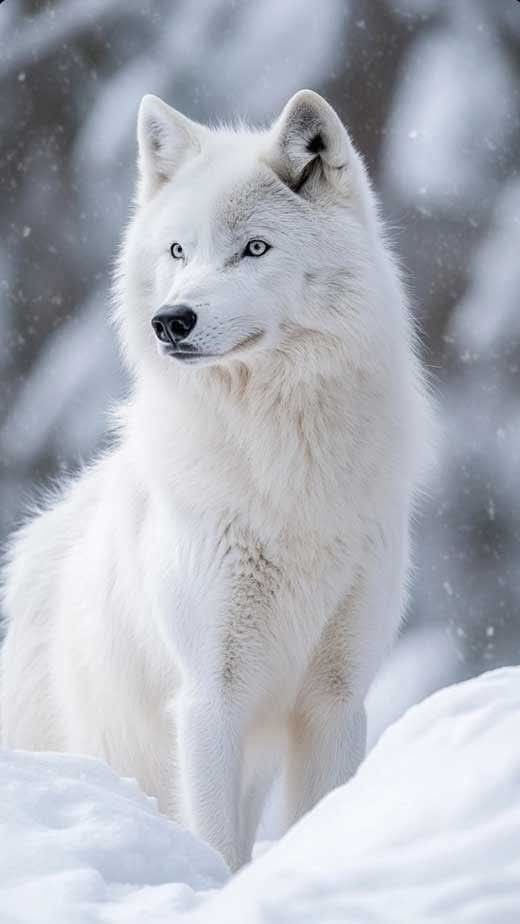
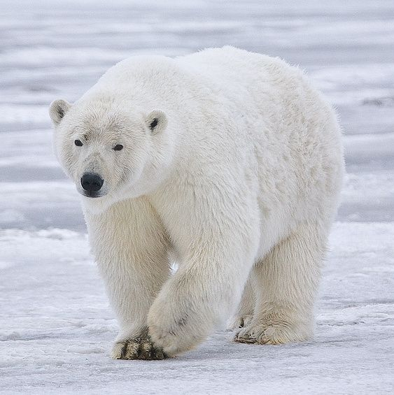
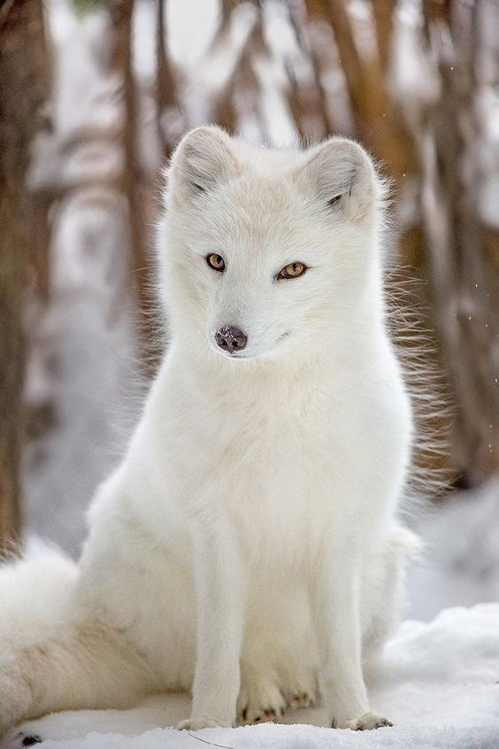

Guardían silencioso de los bosques helados, símbolo de fuerza y sabiduría.
El lobo ártico habita en las regiones más frías del planeta, donde la nieve cubre la tierra casi todo el año. Es un animal fuerte, inteligente y muy resistente al frío extremo gracias a su espeso pelaje blanco. Vive en manadas organizadas y simboliza la lealtad, la protección y la conexión con la naturaleza salvaje.

Rey del hielo, caminante eterno entre glaciares y tormentas.
El oso polar es el mayor depredador terrestre del Ártico y uno de los animales más impresionantes del mundo. Su gruesa capa de grasa y su denso pelaje le permiten sobrevivir en temperaturas extremadamente bajas. Es un excelente nadador y depende del hielo marino para cazar y desplazarse, siendo un símbolo del equilibrio natural.

Pequeño espíritu blanco que se funde con la nieve.
El zorro ártico es pequeño pero increíblemente resistente. Su pelaje cambia de color según la estación, blanco en invierno y marrón en verano, para camuflarse en su entorno. Es un animal ágil, curioso y silencioso, capaz de sobrevivir incluso en los inviernos más duros del Ártico.